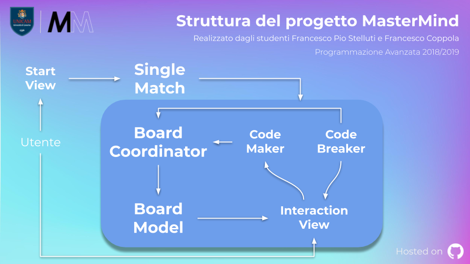

Introduzione¶
Il progetto è stato indirizzato ad all’implementazione tramite linguaggio Java del gioco da tavolo Mastermind 1. Nell’ideare la struttura del progetto si è puntato alla massima modularità possibile, per quanto non totale, ottenuta tramite l’applicazione di determinati design pattern.
Struttura fondamentale del progetto¶
L’idea alla base della struttura del gioco riguarda le interazioni tra l’utente umano ed un’istanza
di una classe che estende StartView. Tramite questa interazione è possibile decidere quali impostazioni
e quali implementazioni dei giocatori, rispettivamente un CodeBreaker ed un CodeMaker,
impiegare all’interno di singole partite. I giocatori potranno poi interagire all’interno della partita
comunicando con una istanza di una classe che estende InteractionView, dalla quale ottengono informazioni
sulla partita in corso e grazie alla quale hanno una possibile interazione con l’utente umano, e con
una istanza di BoardController, alla quale comunicano decisioni di gioco quali la sequenza da indovinare o le sequenze
valide come tentativo per poter indovinare tale sequenza.
Alla base della sequenza, a rappresentazione dei pioli impiegati nel gioco originale, sono presenti valori della
classe enum ColorPegs, contenente otto colori.
Estendibilità ed implementazioni fornite di default¶
Si è deciso di adottare una struttura molto rigida per quanto riguarda la rappresentazione dei pioli e della plancia
di gioco, non offrendo possibilità di aggiungere ulteriori implementazioni o diversificazioni di quelle che sono le classi
ColorPegs, BoardModel e BoardCoordinator.
Diverso il discorso sul piano delle implementazioni di giocatori o delle interfacce di comunicazione con l’utente umano.
È infatti possibile aggiungere classi che estendono CodeMaker e CodeBreaker, fornendo anche le relative classi factory che estendono
rispettivamente MakerFactory e BreakerFactory, senza che il codice venga ricompilato.
Per fare ciò si è deciso di implementare una classe astratta PlayerFactoryRegistry, estesa nel progetto in questione
da MakerFactoryRegistry e BreakerFactoryRegistry, classi che permettono di collezionare a runtime informazioni
riguardo le factory puntate a generare istannze di classi estensione di CodeMaker e CodeBreaker.
Analogamente è possibile aggiungere classi estensione di StartView per fornire particolari viste indirizzate all’interazione
con l’utente fisico durante l’impostazione e l’avvio di nuove partite. Ad ogni StartView si richiede di associare anche una classe
che estenda InteractionView che sia coerente con la particolare estensione di StartView trattata e di includere il metodo main per permettere
l’avvio effettivo del programma.
Di default sono fornite delle implementazioni di quelle che sono le classi rappresentanti i giocatori e l’interazione con l’utente umano:
ConsoleStartView: estensione di
StartView, fornisce un’interazione con l’utente fisico per l’impostazione e l’avvio di nuove partite tramite console.ConsoleInteractionView: estensione di
InteractionView, è strettamente associata con la classeConsoleStartViewfornisce un’interazione con l’utente fisico in caso siano necessarie per impartire nuove decisioni durante lo svolgimento di una partita.InteractiveMaker: estensione di
CodeMaker, fornisce l’implementazione di un giocatore comandato dall’utente umano attraverso l’interazione fornita da una classe estensione diInteractionView. È possibile ottenere istanze di questa estensione tramite la classeInteractiveMakerFactory.InteractiveBreaker: estensione di
CodeBreaker, fornisce l’implementazione di un giocatore comandato dall’utente umano attraverso l’interazione fornita da una classe estensione diInteractionView. È possibile ottenere istanze di questa estensione tramite la classeInteractiveBreakerFactory.RandomBotMaker: estensione di
CodeMaker, fornisce l’implementazione di un giocatore comandato da un IA che agisce fornendo sequenze randomiche. È possibile ottenere istanze di questa estensione tramite la classeRandomBotMakerFactory.RandomBotBreaker: estensione di
CodeBreaker, fornisce l’implementazione di un giocatore comandato da un IA che agisce fornendo sequenze randomiche. È possibile ottenere istanze di questa estensione tramite la classeRandomBotBreakerFactory.
Per ulteriori informazioni circa le classi elencate si rimanda alle relative sezioni.
Informazioni fondamentali circa il primo avvio¶
Il caricamento a runtime delle informazioni relative alle classi factory grazie alle quali ottenere istanze di classi che estendono
CodeBreaker e CodeMaker è stato reso possibile grazie alla lettura di specifici file testuali. In loro assenza il software creerà
dei file standard, comunicando all’utente questa decisione, da modificare obbligatoriamente con le giuste informazioni per avere un
corretto avvio ed una corretta esecuzione del programma.
Responsabilità delle classi¶
Si rimanda alle sezioni riguardanti le implementazioni delle singole classi per ulteriori informazioni.
Design pattern impiegati¶
1. Model View Controller 2
Rappresenta la struttura alla base dell’intero gioco. È stata implementata tramite le classi StartView, InteractionView, BoardModel e BoardCoordinator.
2. Observer 3
Implementato fornendo come classe da osservare BoardModel e come classi che osservano InteractionView e CurrentGameStats. Dalla versione 9 di Java l’interfaccia Observer, pensata nell’ottica di questo design pattern, risulta deprecata. La sua implementazione è quindi da vedere in un’ottica puramente accademica e finalizzata all’apprendimento del concetto alla base del pattern.
3. Singleton 4
Presente all’interno delle classi ConsoleStartView e ConsoleInteractionView, esso garantisce che siano presenti singole istanze di tali classi all’interno del progetto.
4. Factory 5
Implementato tramite l’interfaccia PlayerFactory, implementata da BreakerFactory e MakerFactory, classi astratte da estendere tramite classi factory che forniscano istanze di classi estensione rispettivamente di CodeBreaker e CodeMaker.